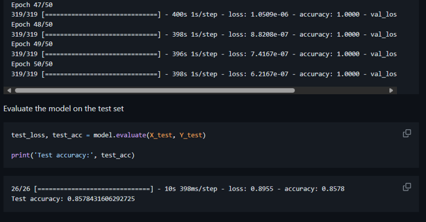

Project
Django Ecommerce website GitHub
Ecommerce website build with Django, Docker, SQLite.
Django Social Media website GitHub
Social media Web Application including group and post build with Django.
Analyze How Python Dev Use GitHub GitHub
Analyze the GitHub Usage Behavior of Python Developers with a High Number of Followers by Web Scraping and GitHub REST API.
Fake And AI Voice Classification GitHub

A python notebook for fake and real voice (from FOR Dataset) classification using MFCC and CNN.
Scrap Itch.io Top Rated Game GitHub

A python code for scraping title author text rating genre from top 36 rated games on itch.io
GitHub Stat Display Card GitHub
A python project for displaying GitHub stat card inspired by neofetch and built with pillow, requests and bs4.
RPG Maker Game Template, only able to walk around, save and load data. doesn't have turn-based combat and other important feature.
Simple Machine Learning In Pygame GitHub
Perform simple machine learning in pygame game; Correlation Matrix, Decision Tree and KMeans.

Touhou-like Shoot Em Up Game using pygame.